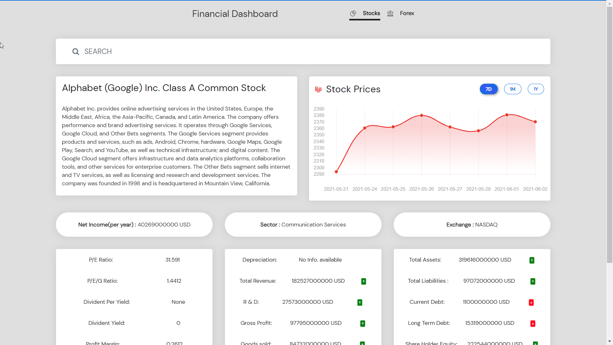
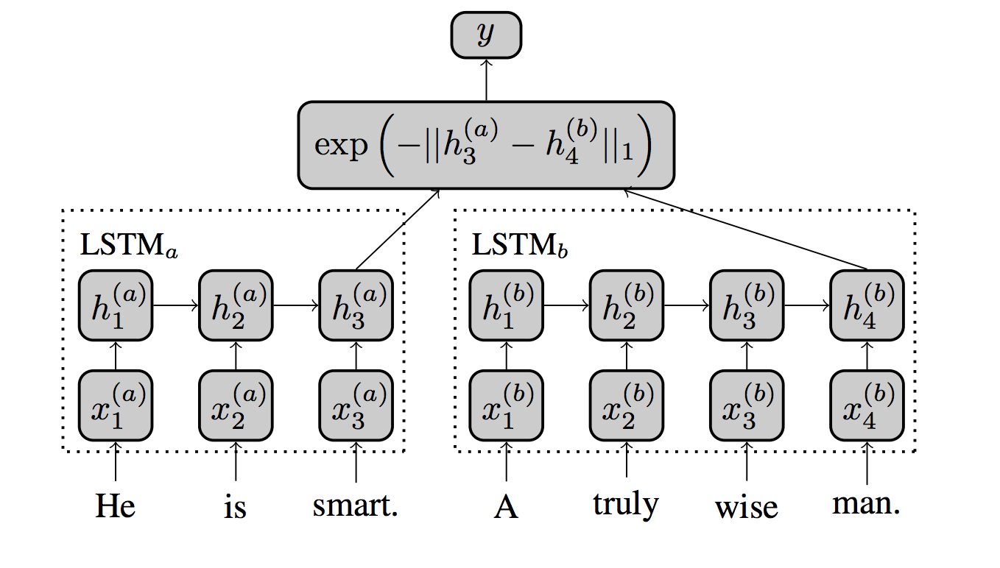
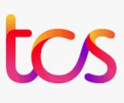
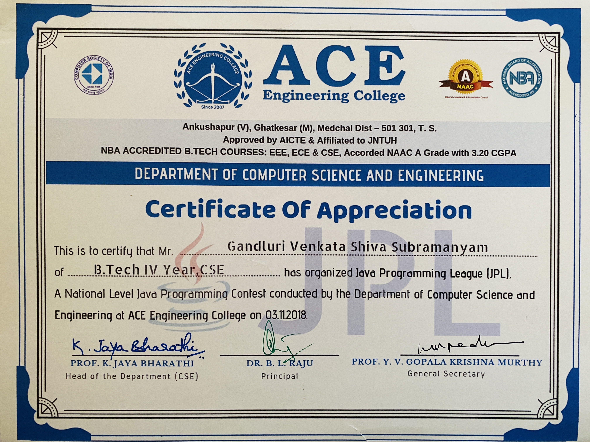
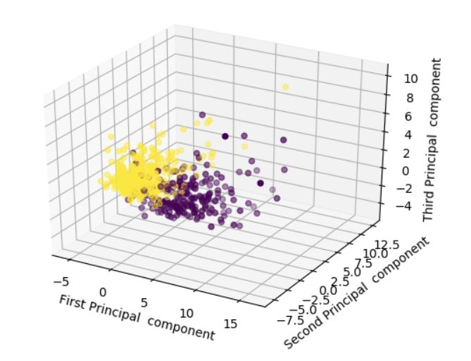

Shiva Gandluri
Research Assistant and Data Science Grad Student at SUNY Buffalo
Nice to meet you! I am a graduate student in the Master's in Data Science program at the State University of New York, Buffalo. I have a Bachelor's in Computer Science and Engineering where I explored various domains in Computer Science and Artificial Intelligence. My interests lie in Software Development, Machine Learning, and Natural Language Processing.
In my spare time, I like to dabble in stuff far from the tech space to consciously build an all-round personality. I avidly follow self-help, business, and finance-related content. I'm a big productivity and minimalism nerd, trying out new productivity tricks in an attempt to achieve a more balanced and mindful life. Also, I've been into music for quite a while now, and it just works like magic in this chaotic world.
Skills
Languages & OS
Python
Java
Linux
Ubuntu
Windows
Git
Database Technologies
MySQL
SQLite
Web Development
HTML5
CSS3
Bootstrap
JavaScript
TypeScript
Angular
Django
Machine Learning
NumPy
Pandas
SciPy
Keras
Scikit Learn
NLTK
Education
State University of New York (SUNY) at Buffalo
Master of Science in Engineering Sciences (Data Science)
August 2021 - Present
Jawaharlal Nehru Technological University - Hyderabad
Bachelor of Technology in Computer Science and Engineering
August 2015 - June 2019
View CertificateProjects
See all Creations for more examples!

Financial Dashboard
Developed a single-page web application displaying real-time stock market data of 7700+ companies, foreign exchange rates for 190+ countries, and a currency converter.

Quora Question Pair Similarity
Built a deep-learning model using Siamese Long Short-Term Memory (LSTM) network to find the semantic similarity of question pairs from Quora's public dataset.
Passenger Satisfaction Prediction
Built a binary classifier model to determine whether a customer is satisfied or not, using the CRISP-DM methodology to derive an appropriate solution for a business problem.
Experience
Research Assistant
University at Buffalo, State University of New York
October 2021 - Present
- Currently working on an ML-based chatbot system that takes a person's symptoms and detects the Sexually Transmitted Disease related to these symptoms.

Assistant Systems Engineer
Tata Consultancy Services
July 2019 - April 2021
- Performed full-stack development including design and troubleshooting of product, validation of needs in conjunction with onsite and offshore teams following Agile-Scrum methodology.
- Built RESTful Web Services for an internal web application for New York Life Co. Integrated various visualization charts with Angular to show user trends and reduced workload for Underwriters by 35%.
- Orchestrated project from start to finish and championed strict code quality control, reinforced best practices, optimized, re-factored existing code bases increasing clarity, consistency, and maintainability.
- Coordinated with a team of three to upgrade SSIS job scripts from Microsoft SQL Server-2008 version to 2012 version and increased SSIS jobs performance by 10% by optimizing scripts of daily jobs.
Machine Learning Intern
Applied AI Course
December 2018 - February 2019
- Crafted two full-stack data science projects and boosted model efficiency.
- Quora Question Pair Similarity: Constructed a Siamese LSTM based deep learning(RNN) model to predict whether a pair of questions are semantically similar or not. Minimized log-loss to 0.28 using Feature Engineering.
- Passenger Satisfaction: Created a machine learning model to predict whether a customer is satisfied or not with journey. Implemented CRISP-DM methodology and obtained results of 96% accuracy.
Leadership

Chairperson
Java Programming League (JPL)
October 2018 - November 2018
Lead a team of four to organize and conduct Java Programming League (JPL), a National level Java Programming Contest at ACE Engineering College.
View CertificateStudent Co-ordinator
Street Cause
January 2017 - March 2017
As a student member, I raised funds for the event "Run for a Cause-2017" organized by Street Cause, an NGO, to help develop few villages by providing basic amenities.
Blogs

Principal Component Analysis (PCA) in Machine Learning Made Easy
Explained about PCA in detail by performing it on sklearn's breast cancer dataset.
Read BlogPassenger Satisfaction Prediction
Explained my project "Passenger Satisfaction Prediction" step-by-step, in detail.
Read Blog